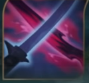
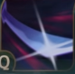
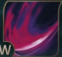
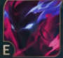
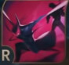

Tóm tắt tiểu sử về Yone, Kẻ về từ cõi chết !
Yone là anh trai cùng cha khác mẹ của Yasuo. Cả hai anh em đều là môn sinh tại trường Kiếm Thuật của Ionia. Do sự tự tin ngu muội mà Yasuo đã không bảo vệ Trưởng lão mà tham gia cuộc chiến. Đến khi quay lại thì Trưởng lão đã chết và Yasuo bị kết tội giết Trưởng lão. Yone tin rằng em trai mình có tội và tìm cách đưa Yasuo ra trước công lý. Yone đã chết trong cuộc đấu với Yasuo và vẫn tin rằng em trai phản bội Ionia. Khi chết linh hồn Yone giao chiến với 1 con quỷ là "Ác Quỷ của những ám ảnh Obsession" Tuy giành được thắng lợi nhưng Yone cũng bị con quỷ xâm nhập vào bản thân. Tuy nhiên anh vẫn điều khiển được ý chí của mình và điều khiển được sức mạnh to lớn mà con quỷ để lại. Yone đã hồi sinh.!!!
Nếu muốn biết thêm về Yone mời bạn nhấp vào link và xem những đoạn phim về Hắn >>>!!!
LINK

Nội tại(Đạo của kẻ săn): Khi đánh thường, Yone sẽ sử dụng lần lượt 2 thanh kiếm và luôn mở đầu với thanh kiếm bình thường. Đòn đánh từ quỷ kiếm sẽ gây thêm sát thương phép. Tỷ lệ chí mạng của Yone sẽ được tăng gấp đôi nhưng sát thương chí mạng lại bị giảm bớt.

Chiêu Q(Tử kiếm): Khi kích hoạt, Yone sẽ đâm kiếm về hướng chỉ định, gây sát thương vật lý và nhận được một cộng dồn tụ bão nếu trúng kẻ địch. Với 2 cộng dồn tụ bão thì Yone sẽ lướt về phía trước, gây sát thương và tạo ra một luồng gió hất tung mọi kẻ địch trúng chiêu. Kỹ năng này sẽ ngắt hoạt ảnh đánh thương khi kích hoạt.

Chiêu W(Trảm hồn): Sau khi vận chiêu, Yone sẽ sử dụng quỷ kiếm chém theo hình vòng cung về hướng chỉ định, gây sát thương phép theo phần trăm máu tối đa của mục tiêu và nhận được một lá chắn tạm thời. Càng chém trúng nhiều tướng địch thì giá trị lá chắn Yone nhận được sẽ càng lớn.

Chiêu E(Xuất hồn): Khi kích hoạt, Yone sẽ tiến vào trạng thái linh hồn, lướt về phía trước và để lại thân xác. Sau khi trạng thái linh hồn kết thúc, Yone sẽ quay trở lại vị trí thân xác của mình. Lúc nhập trở lại thân xác Yone sẽ gây thêm sát thương dựa vào lượng sát thương mà hắn gây ra trong trạng thái linh hồn.

Chiêu Cuối R(Đoạt mệnh): Sau một thời gian vận chiêu, Yone sẽ lướt thẳng theo hướng chỉ định và chém kẻ địch trong phạm vi. Hắn sẽ xuất hiện sau lưng kẻ địch cuối cùng trúng kỹ năng. Kẻ địch trúng chiêu sẽ bị hất tung và kéo về hướng Yone.
!!Link video kỹ năng!!